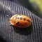

昆虫何以有益？
在一个常以害虫防治视角看待昆虫的世界里，理解何为"有益昆虫"对生态认知和可持续农业都至关重要。这些昆虫提供着不可或缺的生态系统服务——从授粉、自然害虫防治到分解作用和养分循环——维系着粮食系统，支撑着生物多样性，守护着生态系统健康。本文将深入探讨有益昆虫的多重角色，帮助美国园艺爱好者、农民和自然观察者认识并守护这些无价的自然盟友。

生态系统服务
生态系统服务：有益地位之基石
当昆虫提供的服务直接或间接支持人类福祉和生态系统功能时，它就被认为是有益的。这些服务主要分为以下几类：
- 授粉：蜜蜂、蝴蝶、飞蛾、甲虫和苍蝇在花朵间传递花粉，使大约75%的开花植物（包括许多粮食作物）得以繁殖。在美国，仅本土蜜蜂通过授粉服务每年就能为农业生产贡献数十亿美元的价值。
- 生物防治：捕食性和寄生性昆虫能调节害虫种群数量，减少对化学农药的需求。瓢虫、草蛉和寄生蜂是典型代表，它们捕食蚜虫、毛虫等农业害虫。
- 分解作用：蜣螂、葬甲及各种蝇类幼虫分解有机物，将养分返还土壤，并防止疾病传播。
- 土壤健康：蚂蚁、白蚁和甲虫幼虫通过挖掘和取食活动，使土壤透气、改善水分渗透，并促进养分循环。

 经济影响：超越生态价值
经济影响：超越生态价值
有益昆虫的经济价值十分可观。据估算，本土蜜蜂和其他传粉媒介每年为美国农业创造的授粉服务价值高达数十亿美元。益虫对害虫的自然控制降低了农药成本和作物损失。例如，在综合虫害管理项目中引入益虫，已使美国许多果园和蔬菜农场的农药使用量显著减少，既节约了成本，又带来了环境效益。
 识别环境中的益虫
识别环境中的益虫
识别有益昆虫需要了解它们的行为和生态作用。主要观察以下几类：
- 传粉者：活跃访花的昆虫，体表常带有可见花粉。蜜蜂最为人熟知，但蝴蝶、飞蛾、食蚜蝇乃至部分甲虫都是重要的传粉者。
- 捕食者：主动捕猎其他昆虫的昆虫，例如捕食蚜虫的瓢虫，或猎食多种猎物的螳螂。
- 寄生者：将卵产在害虫体表或体内的小型蜂类或蝇类。若发现害虫毛虫或蚜虫身上出现圆形小孔，即表明寄生成功。
loading="lazy">
田野笔记：创建有益昆虫栖息地
为支持益虫生长，应种植多种花期覆盖整个生长季的开花植物，提供遮蔽场所（落叶层、原生草丛、小型灌木堆），并尽量减少农药使用。即使是小型城市花园也能成为益虫的栖息地，为当地生物多样性和生态系统健康作出贡献。
识别并支持益虫对于可持续农业、生态系统健康和生物多样性保护至关重要。通过了解昆虫的益虫特性，我们可以在害虫管理、栖息地设计和保护实践中做出明智决策，从而守护这些宝贵的盟友及其所提供的生态服务。